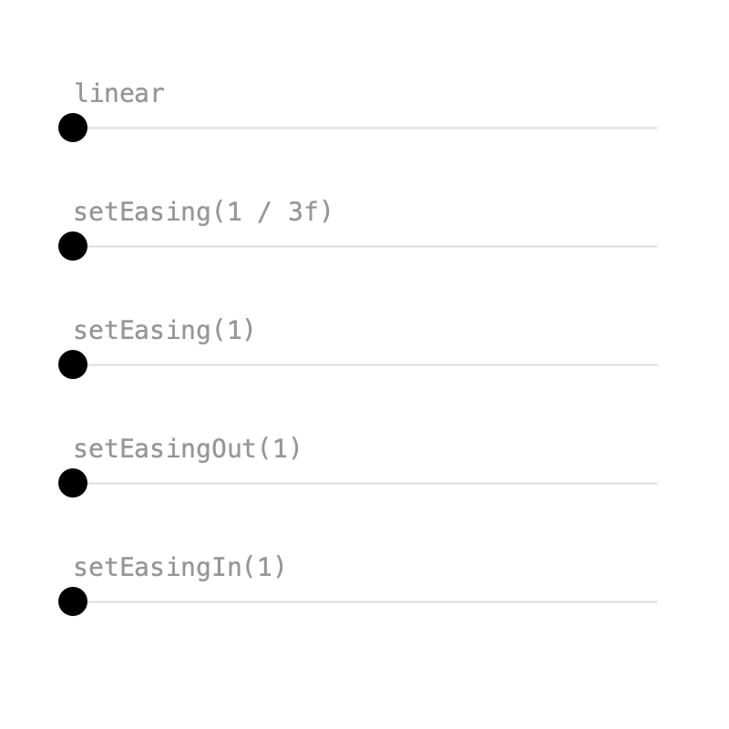
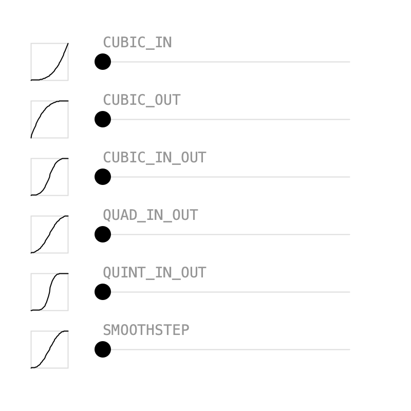
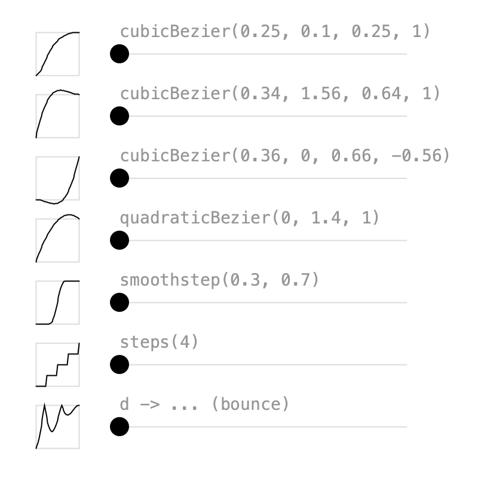
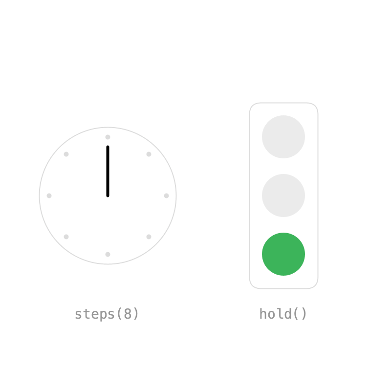

2. Easing¶
Without easing, values move at constant speed and stop abruptly at each key. Easing changes the speed between keys, so motion feels natural. In Keyed, easing is set on a key with Key.at(t) instead of a plain time.
Influence¶

Inspired by After Effects, easing is an influence between 0 and 1 that slows the motion near a key.
easy = Keyed.of(0f)
.key(Key.at(0).setEasing(1 / 3f), x0)
.key(Key.at(1.5f).setEasing(1 / 3f), x1)
.key(Key.at(3).setEasing(1 / 3f), x0);
setEasing(1 / 3f)is similar to After Effects' Easy Ease.- Higher influence, like
setEasing(1), is slower near the keys and faster in between. setEasingOut()only eases leaving a key: soft start, hard stop.setEasingIn()only eases arriving at a key: hard start, soft stop.
Full sketch: Influence
import ch.domizai.keyed.*;
float x0 = 40, x1 = 360;
Keyed<Float> linear, easy, strong, easeOut, easeIn;
void settings() {
size(400, 400);
}
void setup() {
Keyed.init(this).setDuration(3);
textFont(createFont("Courier", 14));
textAlign(LEFT, CENTER);
// Without easing the speed is constant and stops are abrupt.
linear = Keyed.of(0f)
.key(0, x0)
.key(1.5f, x1)
.key(3, x0);
// Influence in [0, 1] slows the motion near a key, like in After Effects.
// 1/3 on both sides of a key is After Effects' Easy Ease.
easy = Keyed.of(0f)
.key(Key.at(0).setEasing(1 / 3f), x0)
.key(Key.at(1.5f).setEasing(1 / 3f), x1)
.key(Key.at(3).setEasing(1 / 3f), x0);
// More influence: slower near the keys, faster in between.
strong = Keyed.of(0f)
.key(Key.at(0).setEasing(1), x0)
.key(Key.at(1.5f).setEasing(1), x1)
.key(Key.at(3).setEasing(1), x0);
// setEasingOut() only eases leaving a key: soft start, hard stop.
easeOut = Keyed.of(0f)
.key(Key.at(0).setEasingOut(1), x0)
.key(Key.at(1.5f).setEasingOut(1), x1)
.key(Key.at(3).setEasingOut(1), x0);
// setEasingIn() only eases arriving at a key: hard start, soft stop.
easeIn = Keyed.of(0f)
.key(Key.at(0).setEasingIn(1), x0)
.key(Key.at(1.5f).setEasingIn(1), x1)
.key(Key.at(3).setEasingIn(1), x0);
}
void draw() {
background(255);
lane("linear", 70, linear);
lane("setEasing(1 / 3f)", 135, easy);
lane("setEasing(1)", 200, strong);
lane("setEasingOut(1)", 265, easeOut);
lane("setEasingIn(1)", 330, easeIn);
}
void lane(String label, float y, Keyed<Float> x) {
noStroke();
fill(150);
text(label, x0, y - 20);
stroke(220);
line(x0, y, x1, y);
noStroke();
fill(0);
circle(x.value(), y, 16);
}
Presets¶

setEasing() also accepts an Easing curve. Keyed has the usual presets:
QUAD,CUBIC,QUARTandQUINT, each with_IN,_OUTand_IN_OUT, e.g.Easing.CUBIC_IN_OUTEasing.SMOOTHSTEPandEasing.HOLD
An Easing shapes the whole segment from its key to the next one, so the last key doesn't need one:
Keyed.of(0f)
.key(Key.at(0).setEasing(Easing.CUBIC_IN_OUT), x0)
.key(Key.at(1.5f).setEasing(Easing.CUBIC_IN_OUT), x1)
.key(3, x0);
An Easing is just a function from linear progress to eased progress, both from 0 to 1. Call apply(d) to use it yourself, e.g. to draw the little graphs in the sketch. The presets also exist as plain functions, like Easing.quadIn(x).
Full sketch: Presets
import java.util.ArrayList;
import ch.domizai.keyed.*;
float x0 = 100, x1 = 340;
// There are IN, OUT and IN_OUT presets for QUAD, CUBIC, QUART and QUINT,
// plus SMOOTHSTEP and HOLD.
String[] names = {
"CUBIC_IN",
"CUBIC_OUT",
"CUBIC_IN_OUT",
"QUAD_IN_OUT",
"QUINT_IN_OUT",
"SMOOTHSTEP"
};
Easing[] easings = {
Easing.CUBIC_IN,
Easing.CUBIC_OUT,
Easing.CUBIC_IN_OUT,
Easing.QUAD_IN_OUT,
Easing.QUINT_IN_OUT,
Easing.SMOOTHSTEP
};
ArrayList<Keyed<Float>> lanes = new ArrayList<>();
void settings() {
size(400, 400);
}
void setup() {
Keyed.init(this).setDuration(3);
textFont(createFont("Courier", 14));
textAlign(LEFT, CENTER);
for (Easing e : easings) {
// An Easing shapes the whole segment from its key to the next one,
// so the last key doesn't need one.
lanes.add(Keyed.of(0f)
.key(Key.at(0).setEasing(e), x0)
.key(Key.at(1.5f).setEasing(e), x1)
.key(3, x0));
}
}
void draw() {
background(255);
for (int i = 0; i < lanes.size(); i++) {
float y = 60 + i * 56;
graph(easings[i], 30, y);
lane(names[i], y, lanes.get(i));
}
}
// An Easing is a function from linear progress to eased progress, both 0..1.
void graph(Easing e, float x, float y) {
float s = 36;
noFill();
stroke(220);
rect(x, y - s / 2, s, s);
stroke(0);
beginShape();
for (int i = 0; i <= 40; i++) {
float d = i / 40f;
vertex(x + d * s, y + s / 2 - e.apply(d) * s);
}
endShape();
}
void lane(String label, float y, Keyed<Float> x) {
noStroke();
fill(150);
text(label, x0, y - 20);
stroke(220);
line(x0, y, x1, y);
noStroke();
fill(0);
circle(x.value(), y, 16);
}
Custom curves¶

When the presets aren't enough, build your own:
// Same as CSS cubic-bezier(); this one is CSS "ease".
Easing.cubicBezier(0.25f, 0.1f, 0.25f, 1)
// y values above 1 overshoot the target...
Easing.cubicBezier(0.34f, 1.56f, 0.64f, 1)
// ...and below 0 pull back before moving.
Easing.cubicBezier(0.36f, 0, 0.66f, -0.56f)
// Starts at 0, ends at 1, pulled towards the middle value.
Easing.quadraticBezier(0, 1.4f, 1)
// Waits until 0.3, moves smoothly, arrives at 0.7.
Easing.smoothstep(0.3f, 0.7f)
// Jumps in 4 equal steps, like CSS steps().
Easing.steps(4)
Easing is a functional interface, so any function of d works too. This one bounces:
There are also Easing.powerIn(p), powerOut(p) and powerInOut(p) for any power.
Full sketch: CustomBezier
import java.util.ArrayList;
import ch.domizai.keyed.*;
float x0 = 100, x1 = 340;
String[] names = {
"cubicBezier(0.25, 0.1, 0.25, 1)",
"cubicBezier(0.34, 1.56, 0.64, 1)",
"cubicBezier(0.36, 0, 0.66, -0.56)",
"quadraticBezier(0, 1.4, 1)",
"smoothstep(0.3, 0.7)",
"steps(4)",
"d -> ... (bounce)"
};
Easing[] easings;
ArrayList<Keyed<Float>> lanes = new ArrayList<>();
void settings() {
size(400, 400);
}
void setup() {
Keyed.init(this).setDuration(3);
textFont(createFont("Courier", 14));
textAlign(LEFT, CENTER);
easings = new Easing[] {
// Same as CSS cubic-bezier(); this one is CSS "ease".
Easing.cubicBezier(0.25f, 0.1f, 0.25f, 1),
// y values above 1 overshoot the target...
Easing.cubicBezier(0.34f, 1.56f, 0.64f, 1),
// ...and below 0 pull back before moving.
Easing.cubicBezier(0.36f, 0, 0.66f, -0.56f),
// Starts at 0, ends at 1, pulled towards the middle value.
Easing.quadraticBezier(0, 1.4f, 1),
// Waits until 0.3, moves smoothly, arrives at 0.7.
Easing.smoothstep(0.3f, 0.7f),
// Jumps in 4 equal steps, like CSS steps().
Easing.steps(4),
// Easing is a functional interface, so any function of d works.
// This one hits the target, bounces back twice and settles.
d -> 1 - abs(cos(d * 2.5f * PI)) * (1 - d)
};
for (Easing e : easings) {
lanes.add(Keyed.of(0f)
.key(Key.at(0).setEasing(e), x0)
.key(Key.at(1.5f).setEasing(e), x1)
.key(3, x0));
}
}
void draw() {
background(255);
for (int i = 0; i < lanes.size(); i++) {
float y = 45 + i * 52;
graph(easings[i], 30, y);
lane(names[i], y, lanes.get(i));
}
}
void graph(Easing e, float x, float y) {
float s = 36;
noFill();
stroke(220);
rect(x, y - s / 2, s, s);
stroke(0);
beginShape();
for (int i = 0; i <= 40; i++) {
float d = i / 40f;
vertex(x + d * s, y + s / 2 - e.apply(d) * s);
}
endShape();
}
void lane(String label, float y, Keyed<Float> x) {
noStroke();
fill(150);
text(label, x0, y - 20);
stroke(220);
line(x0, y, x1, y);
noStroke();
fill(0);
circle(x.value(), y, 16);
}
Hold¶

Sometimes values should jump instead of blend. There are two ways:
- Even jumps:
Easing.steps(n)on a single segment. The clock hand makes one full turn in 8 equal steps. - Uneven timing:
hold()keeps a key's value until the next key. The traffic light is green for 2 seconds, yellow for 0.5 and red for 1.5.
hand = Keyed.of(0f)
.key(Key.at(0).setEasing(Easing.steps(8)), 0f)
.key(4, TWO_PI);
lamp = Keyed.ofInt(0)
.key(Key.at(0).hold(), 2)
.key(Key.at(2).hold(), 1)
.key(2.5f, 0);
Without hold(), the lamp index would be blended and rounded, switching halfway between keys.
Full sketch: Hold
import ch.domizai.keyed.*;
int ticks = 8;
Keyed<Float> hand;
Keyed<Integer> lamp;
int[] lampColors;
void settings() {
size(400, 400);
}
void setup() {
Keyed.init(this).setDuration(4);
textFont(createFont("Courier", 14));
textAlign(CENTER, CENTER);
// Even jumps: one full turn in 8 equal steps,
// with a stepped easing on a single segment.
hand = Keyed.of(0f)
.key(Key.at(0).setEasing(Easing.steps(ticks)), 0f)
.key(4, TWO_PI);
// Uneven timing: green for 2 seconds, yellow for 0.5, red for 1.5.
// hold() keeps a key's value until the next key. Without it the lamp
// index would be blended and rounded, switching halfway between keys.
lamp = Keyed.ofInt(0)
.key(Key.at(0).hold(), 2)
.key(Key.at(2).hold(), 1)
.key(2.5f, 0);
// Red, yellow and green, from top to bottom.
lampColors = new int[] {
color(230, 60, 60),
color(240, 190, 40),
color(60, 180, 90)
};
}
void draw() {
background(255);
clock("steps(8)", 110, 200, hand.value());
trafficLight("hold()", 290, 200, lamp.value());
}
void clock(String label, float x, float y, float angle) {
float r = 70;
noFill();
stroke(220);
circle(x, y, r * 2);
strokeWeight(5);
for (int i = 0; i < ticks; i++) {
float a = i * TWO_PI / ticks - HALF_PI;
point(x + cos(a) * (r - 10), y + sin(a) * (r - 10));
}
stroke(0);
strokeWeight(3);
float a = angle - HALF_PI;
line(x, y, x + cos(a) * (r - 20), y + sin(a) * (r - 20));
strokeWeight(1);
noStroke();
fill(150);
text(label, x, y + 120);
}
void trafficLight(String label, float x, float y, int lit) {
noFill();
stroke(220);
rect(x - 35, y - 95, 70, 190, 12);
noStroke();
for (int i = 0; i < 3; i++) {
fill(i == lit ? lampColors[i] : color(235));
circle(x, y - 60 + i * 60, 44);
}
fill(150);
text(label, x, y + 120);
}
Next: Timelines.